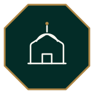
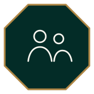
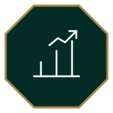

منصة عربية لإدارة حلقات التحفيظ داخل المساجد
ما هي حافظ؟
من الحضور والواجب إلى تقرير الأهل — دون تشتيت بين الورق وواتساب.
التحدي
متابعة يدوية يصعب الرجوع إليها
ورق هنا وواتساب هناك
إعداد يدوي بعد كل جلسة
الفرق
الأركان



الأدوات
تسجيل يومي منظّم لكل جلسة
مهام فردية واضحة للطالب
متابعة التقدّم عبر الجلسات
مصحف مفسَّر مع قرّاء
رسالة جاهزة لولي الأمر
تسجيل محلي ثم مزامنة
الأدوار
تسجيل المسجد وإدارة الحلقات والمعلّمين
حضور وواجب وتقرير بعد كل جلسة
دخول برمز بسيط ومتابعة واضحة
البدء
سجّل مسجدك وابدأ بعد الموافقة
ادعُ المدرّسين برموز بسيطة
حضور، واجب، وتقرير
لماذا حافظ؟
يسجّل محليًا ثم يزامن
هاتف عراقي ورموز دخول
لغة وواجهة لحلقة المسجد
حمّل لأندرويد، ثم سجّل مسجدك من داخل التطبيق.
hafizapp.xyz · مجاني · أندرويد 6.0 فأعلى
← → للتنقّل · F لملء الشاشة